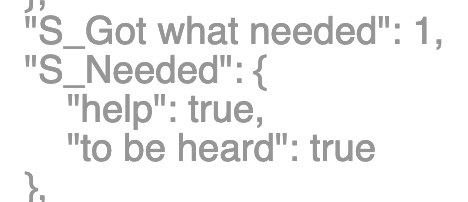

Start story collection
A story collection identifies a specific group of stories that were collected using a specific story form.
You can have multiple story collections within one project.
For example, you might create a test collection for experimenting,
a pilot collection with a draft story form, and a final story collection with a revised story form.
What to do here
To create a story collection, click Add, then give the new story collection a name.
This name won't be visible to the people who only tell stories in the project.
It will only be visible to people who can see the pages of your NarraFirma project.
Next, choose a story form from the list of forms you already created.
This form will be permanently associated with the new story collection.
Finally, CLICK THE CLOSE BUTTON. Don't forget to do this. When you click the Close button,
NarraFirma creates a snapshot copy of the selected story form — as it stands at that moment —
and saves it in the story collection.
If you forget to click the Close button, you will create a story collection with no associated story form,
and you will see errors when you try to add stories to the collection.
If that happens, don't worry; you can fix it. Come back to this page, select the story collection in the list, then click Edit.
Check that the correct story form is selected, then click the Update Story Form button.
There are three ways to add stories to a story collection.
- You can collect stories over the internet. To do this,
select your new story collection in the list, then click Activate or Deactivate Web Form.
Now look below the table and find the place where it says The web address (URL) of this story collection is.
Click on the link shown there, or copy and paste it into your browser. You can send that link to anyone, and
they will be able to use it to fill out your story form and add stories to the story collection.
-
You can enter stories using the NarraFirma data-entry interface. Go to the
Enter or import stories page and follow the instructions there.
-
You can import stories you collected using a different surveying package.
Go to the
Enter or import stories page and follow the instructions there.
Connections to other pages
When you associate a story form with a story collection,
a snapshot of the story form, as it appears at that moment,
is copied into the story collection. Any changes you make to the form
or the questions after that moment will not be automatically reflected in the story collection.
This is because once you start collecting (or entering) stories, you need all of your data
to match up (or you won't see patterns in it).

You can update your story collection to use a revised story form - but do this with caution.
To revise a story collection's associated story form:
- Make the change (to the question or form) on the page on which you created it.
- Return to this page.
- Select the story collection you want to change.
- Click Edit.
- Click the Update Story Form button. Now your story collection will use the changed story form.
Frequently-asked questions
Can you give me a clearer picture of exactly what I can and cannot change in my story form
after I have started to collect stories?
At the level of the story form
Changes that are perfectly safe:
- You can change any texts that appear on your story form that are not saved in your stories.
For example, you can change the story form's title, introduction, and conclusion,
as well as any messages to participants (like "Thank you for sharing your story").
- You can add new questions (eliciting, about stories, or about participants).
- You can change the order of questions on the story form. Order is display-only.
Do not change the short name of the story form.
At the level of the question
Changes that are perfectly safe:
- You can change the actual text of the question. It is display-only.
- You can change the label on the write-in "other" box.
- There are actually a few pairs of question types you can switch between without any problems:
- label and header (both store nothing)
- text and textarea (both are stored as plain text)
- select and radiobuttons (both are stored as a single plain-text answer)
- For a checkbox question, you can change the text displayed after the checkbox. It is a display-only option.
The value saved is a true/false value, no matter what it says on the checkbox.
- For a boolean question, you can set the text displayed on the choices (from the default of yes/no)
at the level of the story form. This is a display-only option.
- For a slider, you can change the left and right slider labels.
The values saved with the stories are numerical only.
You can also change the label of the "Does not apply" checkbox under the slider. This is a display-only option as well.
- You can of course change any notes you wrote to yourself about the question.
If you need to change a question's short name or type:
- Collect your stories in two separate story collections.
- Export the story forms and stories associated with both story collections to separate CSV files.
You will end up with four files: two story-form files and two data files.
- Compare the four files. See what you need to do to merge your questions without losing meaning.
- Merge the two story-form files into one.
- Merge the two data files into one.
- Import the merged story form. Check that it looks right.
- Import the merged data file. Check that the stories look right.
- If you have questions during this process, see the Import guide.
Questions with fixed lists of answers (select, radiobuttons, checkboxes)
Changes that are perfectly safe:
- You can add new answers to the list.
- You can change the order in which the answers are shown to participants. Order is display-only.
- You can change the number of rows shown in a select (drop-down) question.
If you need to change one of the existing answers in a fixed list:
- Make the change in the question (on the
Write questions about stories page, for example).
- Go to the Start story collection page and update the form.
- Add more stories to the collection.
- When you look at your data, you will see two sets of counts: one count for the old answer, and one count for the new answer.
-
Merge the two answer counts by using display lumping during catalysis. See the help for the
Configure catalysis report page for details.
- You can also merge two answers by exporting, changing, and re-importing your data.
If you need to remove one of the existing answers in a fixed list:
- Go to the
Review incoming stories page.
- Go through the stories, unchecking every instance of the answer.
- Make the change in the question (on the
Write questions about stories page, for example).
- Go to the Start story collection page and update the form.
- Add more stories to the collection.
- When you look at your data, the deleted answer should not appear.
If it does (which probably means that you left an answer in one story), and you don't want to find it,
you can use the display lumping feature to "hide" the extra answer inside another answer. See the help for the
Configure catalysis report page for details.
If you are not sure what to do
The very best way to get a clear picture of what you can and cannot change is to
look at your raw story data and think about how the changes you want to make will affect what has been saved already.
- Enter a fake story that has an answer for every question. For multiple-choice questions, tick every box.
- Go to the
Review incoming stories page.
- Select your new fake story.
- Click the Show story as raw JSON data button.
- In the popup window that appears, look at the story's data structure.
Think about what will happen if you make the changes you want to make.
You can ignore the prefixes on the question short names (S_, P_); those are for internal use (to prevent collision).
- For example, in this case:

If I wanted to change the option "help" to "support," I would have a problem to deal with, because here it is in the data.
However, if I wanted to change the way the "Needed" question is asked, that would be fine,
since the text of the question does not appear in the data.
-
If what you want to do looks like it will have no impact on the story, go ahead and make the change, then update the story form
on the Start story collection page.
If it does look your change will impact your data, see the appropriate "if you need to" section above.
I have two story collections that are identical except for a few small differences. Can I merge them?
If the story forms used in the two story collections only differ in appearances — that is, the data is the same —
you can simply add both story collections to a catalysis report. NarraFirma will merge any questions and answers whose
short names are identical. (If the answers aren't identical, you can use display lumping to merge them.)
If the data in the two story collections are not the same (for example, their question short names differ),
you can still merge your data,
but you'll have to use CSV export and import to do it.
Export both story collections and their associated story forms
to the CSV file format. Then carefully merge the two CSV files into one file, using a spreadsheet.
Then import the merged CSV file into a new story collection (along with the revised story form).
If you are not sure what to do, one quick way to check is to
export both story collections to CSV files, then compare the files using a spreadsheet.